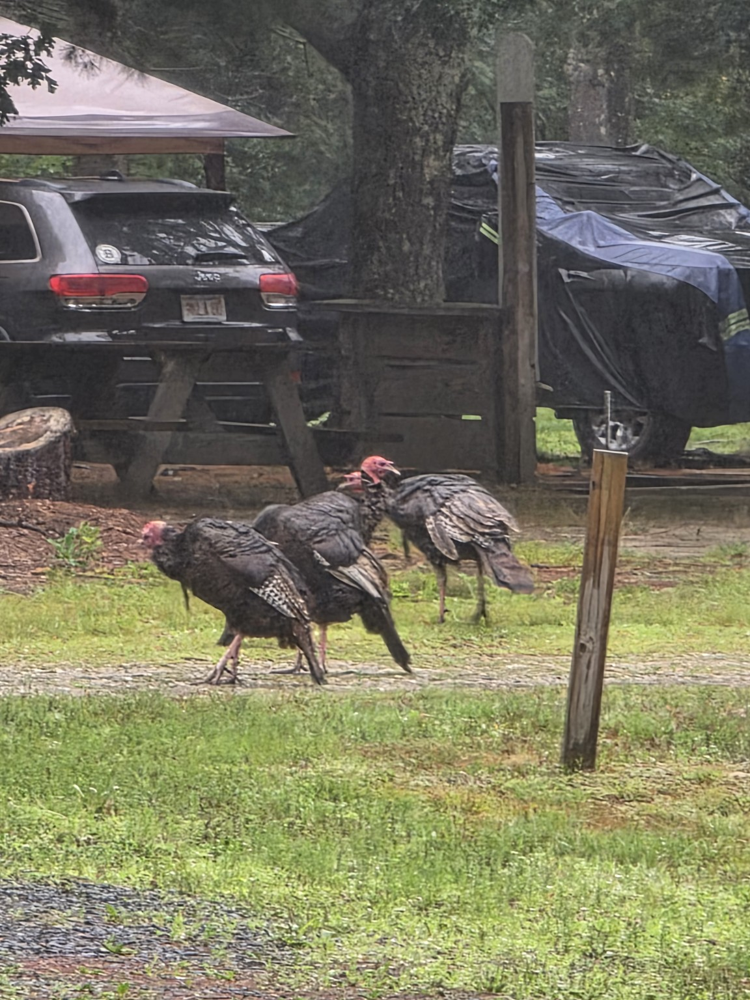

Pointing Trail Tater toward Plymouth
Arrival: about 2:10 PM
We pulled into Plymouth at about 2:10 this afternoon. On the ride up, it poured. Then it poured again—and again. As we got closer to Plymouth it stopped, then started once more, and finally stopped long enough for us to build camp.
We got Trail Tater parked and leveled, then set up the tents. Before long the canopy was up, the chairs were gathered around the fire ring, and our little Plymouth camp had taken shape beneath the pines.
The afternoon stayed overcast with a slight breeze. With camp complete, we went in search of food—just like my forefathers did when they came here, although we had a truck and GPS to help us along.
Tonight's weather
Overcast with showers possible.
Showers remain likely at times tonight.
Mid-60s °F overnight.
Humid with a light breeze.

From the camp kitchen
Burgers and hot dogs 🍔🌭
Pancakes, syrup, bacon, and sausage 🥞🥓

“We are going in search of food just like my forefathers did when they came here.”

The journey has begun
Months of planning became real today. Trail Tater is parked in Plymouth, the campfire ring is waiting, and the first page of this trip has officially been written.
Day Two · Thursday, July 30
Rain, Rocks & Rainbow Flames
Rain settled over Sandy Pond for much of the morning, but it never managed to dampen the Trail Tater spirit. Coffee stayed hot beneath the canopy, breakfast filled the air with the smell of pancakes and bacon, and wild turkeys wandered through camp as though they had come to inspect the newcomers.
What began as a wet day became one of the fullest days of the trip—part campground adventure, part family art project, and part old-fashioned evening around the fire.

Breakfast beneath the canopy
The Blackstone produced pancakes, bacon, and sausage while the rain fell beyond the shelter. The first pancake went to Sade, the newest member of the Trail Tater crew and a first-time Trail Tater adventurer.
Pancakes, bacon, and sausage 🥞🥓
Presented to Sade
Wild turkeys on patrol 🦃
Wet weather, warm coffee ☕


Foraging, exploring & Enisketomp
With the rain still shaping the day, the crew headed out for a little modern-day “foraging” at Walmart, then visited Enisketomp—“Human Being”, Peter Wolf Toth's carved tribute to Indigenous people.
Back at Sandy Pond, the girls explored the trails near the pond. It is not the campground's swimming pond, but it gave everyone a chance to stretch their legs, look around, and discover more of the place we were calling home for the week. More turkeys appeared, another camper reported seeing a skunk, and Ken's own wildlife tally included a squirrel—Stewie would have considered that a major sighting.


Rainy-day rock painting
The afternoon's rain brought everyone back beneath the canopy, where the picnic table became an art studio. Paints, brushes, paper plates, and campground stones covered the table as the crew turned ordinary rocks into little pieces of Trail Tater history.
The idea had a lovely beginning: painted rocks had been waiting around the campground when the crew arrived. Rather than simply keeping the surprise, everyone decided to pass it along. When the new rocks were finished, they were hidden around Sandy Pond for future campers to discover.


This week's Trail Tater Crew
Every person helps turn a campsite into a story. This Plymouth adventure belongs to:
Firemaster and keeper of the journal
Trail Tater crew
Camp cook extraordinaire
Trail Tater crew
Trail Tater crew
Trail Tater crew
Trail Tater crew
First Trail Tater adventure—welcome aboard!
Billie feeds the crew
As evening approached, Billie took charge of camp kitchen. She handled the kabobs on the grill while cooking corn on the cob on the Blackstone, keeping both stations moving and making sure the entire crew was fed.
She deserves an extra nod for stepping up and turning a damp camping day into a proper family meal. The smell of dinner drifting through camp was every bit as welcome as the clearing sky.


Firemaster takes over
Once dinner was finished, Ken resumed his official role as Firemaster. The fire began small, caught steadily, and soon filled the truck-rim fire ring with a strong evening blaze.
Trail Tater's eye color was put to a crew vote. Red won the night. From now on, everyone gets a vote—and should the count ever tie, the Firemaster holds the deciding ballot.


Rainbow flames
After dinner was safely finished, Rainbow Flame Crystals went into the fire. Blues and greens began appearing beneath the familiar orange flames, growing brighter as darkness settled over the campsite.
The effect turned an already good campfire into the perfect finale for a day that had started with steady rain.


Tonight's weather
The day's steady rain finally tapered off.
Cool and comfortable for sitting around the fire.
Clouds lingered as darkness settled over camp.
A welcome campfire evening after a wet day.
Sometimes the best camping memories aren't made despite the rain—they're made because the rain slows everyone down long enough to enjoy being together.


Day Two complete
It started with rain on the canopy and ended with red eyes glowing through the trees. In between came pancakes, turkeys, exploring, painted rocks left for strangers, a meal cooked by Billie, and a rainbow campfire built by the Firemaster. Day Two did not merely survive the weather—it became one of the trip's best stories.